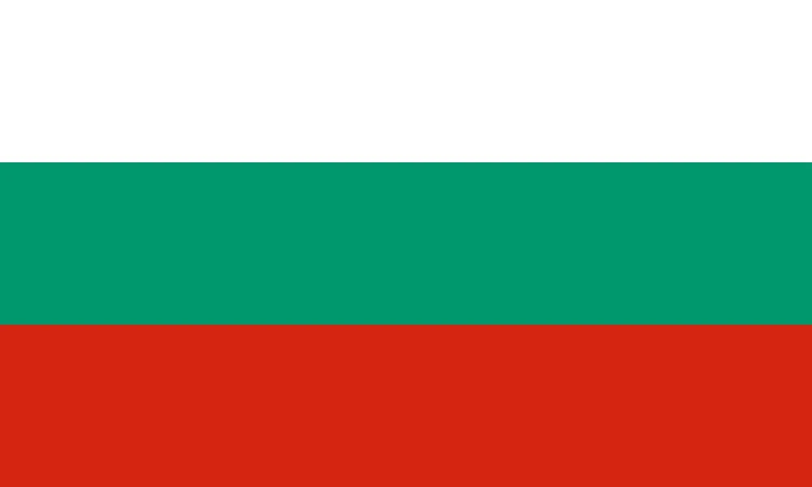

1. Romário’s Final Dagger
July 17, 1994—Rose Bowl, Pasadena, 91,194 sweating it out—Brazil vs. Italy, final locked at 0-0. Extra time’s dragging—everyone’s knackered—then penalties hit. Romário, 28, Brazil’s sharp end, steps up—Franco Baresi’s skied his, Márcio Santos gets saved—but Romário? Cool as—slots it bottom left—1-0. Italy stumble—Daniele Massaro’s stopped, Roberto Baggio blasts over—3-2 Brazil. First shootout final—fourth star’s theirs, 24 years since Pelé.
The place erupts—yellow everywhere—Romário’s fist’s up—“For the people,” he grins; Carlos Alberto Parreira’s beaming—“He’s our soul.” Clips roll—Romário’s ice-cold pen, Baggio’s miss—it’s mental. “He carried us,” Bebeto said; Paolo Maldini’s gutted—“He decided it.” Eight goals total—Golden Boot’s in sight—Romário’s the dagger that ends Brazil’s drought. “He’s the king,” Pelé’s tweeting—Gianluca Pagliuca’s just nodding—“Unstoppable.” Still gets you—samba’s back, Pasadena’s rocking.

2. Baggio’s Penalty Heartbreak
Same day, same final—Rose Bowl, 91,194 holding their breath. Italy’s trailing 2-3 in pens—Roberto Baggio, 27, “Divine Ponytail,” steps up. Five goals already—Golden Ball’s his—he’s dragged Italy through—brace vs. Nigeria, clutch ones vs. Spain, Bulgaria. Pressure’s crushing—he strikes—ball sails over Cláudio Taffarel—miss. Brazil explode—title’s theirs; Baggio’s just staring, hands on hips, broken.
It’s dead quiet—Italy’s blue collapses; Brazil’s fans drown Pasadena. “I failed,” Baggio whispers later; Arrigo Sacchi’s sighing—“He’s human.” Clips hit—ball flying, Taffarel diving—’90 all over again for Italy. “He gave everything,” Maldini said; Dunga’s like—“Cruel game.” Five goals, three assists—Baggio’s brilliance flops at the last hurdle. “He’s still the best,” Maradona reckoned—those replays, ponytail down, they sting, mate.

3. Colombia’s Escobar Tragedy
June 22, 1994—Rose Bowl again, 93,194 watching—Colombia vs. USA, group stage. Thirty-five minutes in—John Harkes swings a cross—Andrés Escobar, 27, slides to clear—own goal, straight past Óscar Córdoba—1-0. Earnie Stewart adds one—2-1 USA—Colombia crash out, second loss. Then—July 2, Medellín—Escobar’s gunned down outside a bar—12 shots—tied to gambling debts off that goal.
Pasadena goes quiet—Colombia’s yellow fades; USA’s buzzing—“A mistake,” Escobar said after; Francisco Maturana’s gutted—“Devastating.” Clips show it—ball deflecting, Córdoba diving—then the news hits. “He was our rock,” Pablo Escobar—no relation—said; Alexi Lalas is all—“It’s bigger than football.” Colombia’s World Cup’s done—FIFA’s 5th rocked. “He’s a martyr,” Pelé said—still messes you up, mate—football turns dark.

4. Maradona’s Greece Rampage and Doping Fall
June 21, 1994—Foxboro Stadium, 54,456 buzzing—Argentina vs. Greece, group stage. Diego Maradona, 33, back from ’90’s ban, comes out swinging—60th minute, links with Claudio Caniggia, smashes a 25-yarder past Antonios Nikopolidis—3-0. Argentina roll—4-0—Gabriel Batistuta’s hat-trick—but Diego’s sprinting to the camera, eyes popping—something’s off. June 25—boom—ephedrine test fails—he’s out, Argentina flop.
Crowd’s roaring—blue-and-white’s buzzing—Diego’s screaming—“I’m alive!” Alfio Basile’s grinning—“He’s back.” Clips hit—rocket shot, Nikopolidis flapping—then doping news drops. “He cheated,” Nikos Machlas said; Caniggia’s gutted—“We lost him.” Argentina limp—lose to Bulgaria, Romania—out in the 16. “He’s a genius—and a fool,” Pelé said—those replays, Diego’s blaze then bust, they’re wild, mate.

5. Hagi’s Romanian Rocket
June 22, 1994—Pontiac Silverdome, 61,428 packed in—Romania vs. Switzerland, group stage. Seventeen minutes—Gheorghe Hagi, 29, “Maradona of the Carpathians,” picks it up midfield—charges, lets rip—30 yards, top corner, Marco Pascolo’s got no chance—1-0. Romania pile on—Florin Răducioiu grabs two—4-1—they top Group A. Hagi’s on fire—three goals, two assists—quarters next, lose to Sweden on pens.
The dome’s rocking—Romania’s yellow’s everywhere—Hagi’s sprinting, arms out—“For the nation,” he grins; Anghel Iordănescu’s chuffed—“He’s our genius.” Clips roll—ball screaming, Pascolo diving—pure flair. “He tore us apart,” Alain Sutter said; Răducioiu’s like—“We dreamed big.” Romania’s golden era—first knockout since ’70—Hagi’s rocket’s the spark. “He’s a wizard,” Pelé said—still bangs, mate.

6. Stoichkov’s Bulgarian Rampage
July 5, 1994—Giants Stadium, 77,217 buzzing—Bulgaria vs. Mexico, round of 16. Six minutes—Hristo Stoichkov, 28, Barcelona’s madman, curls a free-kick past Jorge Campos—1-0. Mexico level—García Aspe’s pen, 1-1—extra time’s looming—pens it is. Stoichkov slots first—Bulgaria nail it—3-1—Iordan Letchkov’s header vs. Germany next—2-1—semis, lose 2-1 to Italy. Six goals—Golden Boot tied.
Crowd’s going nuts—Bulgaria’s red’s roaring—Stoichkov’s glaring, fist up—“For us,” he growls; Dimitar Penev’s buzzing—“He’s our lion.” Clips hit—free-kick bending, Campos flapping—Bulgaria’s dark horse charges. “He’s a beast,” Hugo Sánchez said; Lechkov’s like—“We shocked ‘em.” First World Cup semi—Stoichkov’s fire drives it. “He’s unstoppable,” Maradona said—still gives you goosebumps, mate.
7. Sweden’s Bronze Medal Run
July 13, 1994—Rose Bowl, 91,500 watching—Sweden vs. Romania, quarter-final. It’s 1-1—Răducioiu, Tomas Brolin trading—extra time—2-2—pens hit. Kennet Andersson, Henrik Larsson step up—clutch—5-4, Petrescu misses—Sweden’s through. Semi—lose 1-0 to Brazil, Romário—but third-place game—July 16—4-0 over Bulgaria—Brolin, Martin Dahlin shine. Bronze is theirs.
Pasadena’s rocking—blue-and-yellow’s waving—Brolin’s thumping his chest—“For the fans,” he grins; Tommy Svensson’s chuffed—“Team spirit.” Clips roll—pens, Dahlin’s brace—Sweden stun. “They outfought us,” Hagi said; Stoichkov’s gutted—“Overwhelmed.” Best since ’58—third place—proper grit. “They’re warriors,” Pelé said—still hits you, mate—Sweden’s summer jewel.

8. Bebeto’s Baby Cradle Celebration
July 9, 1994—Cotton Bowl, Dallas, 63,998 sweating—Brazil vs. Netherlands, quarter-final. Sixty-third minute—Romário feeds Bebeto, 30—he slots past Ed de Goey—2-1. Bebeto’s off—rocking an imaginary baby—Romário, Mazinho join in—his son’s born days back. Brazil hold—3-2—Branco’s free-kick—semis next, 1-0 over Sweden.
Crowd’s buzzing—yellow’s glowing—Bebeto’s smiling—“For Mattheus.” Clips hit—cradle dance, de Goey diving—pure heart. “Pure joy,” Parreira said; Frank Rijkaard’s like—“Classy.” Five goals total—Bebeto’s run lifts Brazil—iconic bit, that. “He’s special,” Pelé said—still warms you up, mate—Netherlands out, Brazil roll.

9. Saudi Arabia’s Saeed Stunner
June 25, 1994—Giants Stadium, 76,322 buzzing—Saudi Arabia vs. Morocco, group stage. Seven minutes—Saeed Al-Owairan, 26, grabs it in his half—takes off—dodges five Moroccans, 70 yards—slots past Khalil Azmi—1-0. Saudi hold—2-1—Sami Al-Jaber adds—first knockout stage—lose 3-1 to Sweden. FIFA calls it “Goal of the Tournament.”
Crowd’s gasping—then roaring—Saudi’s green’s bouncing—Al-Owairan’s sprinting—“Unbelievable,” he grins; Jorge Solari’s buzzing—“He’s our star.” Clips roll—solo run, Azmi diving—underdog gold. “He flew,” Noureddine Naybet said; Al-Jaber’s like—“For Arabia.” First Asian past groups since ’66—Saeed’s a legend. “He’s magic,” Pelé said—still bangs, mate—Morocco’s buried.